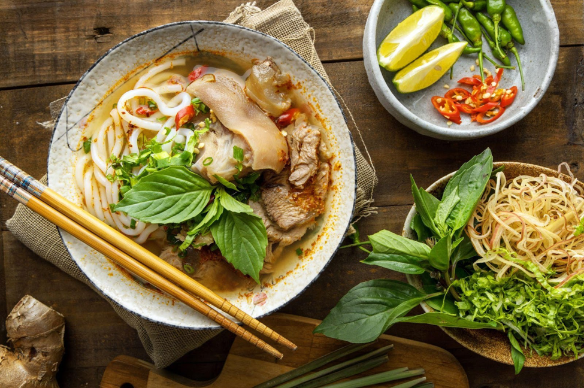

Ẩm thực xứ Huế luôn đáp ứng các yêu cầu chế biến công phu, trình bày đẹp mắt và mang sự hài hòa trong hương vị.
Từ Đại Nội cổ kính đến những kiến trúc mang đậm tính biểu tượng văn hóa Việt, không gian xứ Huế như luôn mang lại cho du khách cảm xúc hoài niệm. Nét giao thoa giữa cảnh đẹp
thiên nhiên, lịch sử văn hóa và sự nồng hậu của con người Huế được gói trọn
trong hương vị ẩm thực nơi đây. Các món ăn Huế đa dạng từ phong cách cung đình cầu kỳ
đến dân dã, mộc mạc.
Cố đô Huế với phong cảnh hữu tình và bề dày văn hoá. Ảnh: Maggi
Với hơn 1.300 món ăn, Cố đô Huế được ví như kho tàng ẩm thực phong phú nhất Việt Nam. Những món ăn nơi đây không chỉ là nhu cầu hàng ngày, còn được người dân nâng tầm thành nghệ thuật.
Họ cầu kỳ trong cách bài trí món ăn, bởi bên cạnh ngon, món ăn còn cần đẹp, thơm và người thưởng thức sẽ dùng tất cả giác quan để tận hưởng. Ví dụ, một đĩa nem công - món ăn đứng đầu bát trân (8 món ăn dâng lên vua chúa) là biểu tượng của sự thanh nhã. Để làm được món ăn này hoàn hảo, nghệ nhân phải tỉ mỉ làm đầu chim phượng từ củ cải, cà rốt, rồi lại tạo thân chim công từ những cây nem.
Ngay cả một đĩa rau sống của người Huế cũng phải hài hoà về màu sắc, với cà chua đỏ rực như mặt trời, khế
vàng hình ngôi sao, những lát vả thái hình trăng khuyết. Nét cầu kỳ của người con xứ Huế còn thể hiện trong
dụng cụ ăn uống. Với họ, mỗi món phải có cách ăn thích hợp: ăn cơm hến phải dùng tô đất, chè hạt sen hay chè
đậu ngự phải dùng chén sứ...
Nem công là món ăn đứng đầu bát trân của cung đình Huế. Ảnh: Bùi Thủy
Ngoài các món cung đình, những món dân dã cũng tạo nên nét khác biệt, cầu kỳ của ẩm thực Huế. Bún bò Huế là một trong những món ăn sáng khoái khẩu của hầu hết người dân và du khách đến đây. Món ăn này còn được đầu bếp Anthony Bourdain đánh giá là một trong những món ngon nhất thế giới. Bát bún bò đòi hỏi sự khéo léo và chăm chút của người nấu bếp. Người Huế nêm nếm gia vị món bún bò theo mùa. Mùa hè chỉ nêm muối nhạt, mùa đông sẽ mặn hơn để trung hòa giữa thời tiết và hương vị món ăn, mang đến trải nghiệm ẩm thực hoàn hảo nhất cho thực khách.
Bạn cũng có thể chọn cơm hến cho bữa ăn trưa - món ăn với tuổi đời hơn 200 năm và từng được nhà Nguyễn đưa vào danh sách các món ăn cung đình. Tuy được làm từ những nguyên liệu giản dị nhưng công đoạn chế biến của món cơm hến lại cầu kỳ. Đầu bếp phải đi bắt hến ở cồn Hến trên sông Hương, chuẩn bị tỉ mỉ ruốc thơm, rau sống, môn bạc hà, bắp chuối xắt mỏng, rau má, khế, rau thơm thái nhỏ và cơm nguội. Vì người Huế thích ăn cay nên một tô cơm Huế đúng vị phải cay "trào nước mắt". Đây cũng là điểm độc đáo trong phong cách thưởng thức ẩm thực của người dân nơi đây.
Khi các hàng quán đóng cửa, du khách tới Huế lại được thưởng thức cơm âm phủ. Tên gọi này bắt nguồn từ việc quán cơm thường mở vào lúc 0h, phục vụ các món bình dân cho người Huế.
Cơm âm phủ là sự kết hợp hài hòa của những thức ngon: thịt ram, giò lụa, nem chua, tôm, trứng tráng, rau thơm, dưa món... cùng cơm trắng và nước mắm tỏi ớt chua cay.
Một trong những lý do khiến món ăn này đặc sắc là do bàn tay khéo léo của người chế biến. Thịt ướp nướng
trên than củi phải đảm bảo xém thơm bên ngoài nhưng mọng nước bên trong, tôm tươi được nêm đậm đà, trứng vịt
béo ngậy tráng mỏng tang, cơm đơm vào bát không được nén. Đặc biệt, vị các món được nêm nếm vừa vặn, kết hợp
rau thịt đủ màu, đủ vị xếp tỏa xung quanh. Thực khách có thể chế biến món ăn này tại nhà và nên nêm nếm bằng
nước tương, hạt nêm, dầu hào Maggi.

Bún bò Huế - đặc sản nổi tiếng vươn ra thế giới. Ảnh: Maggi